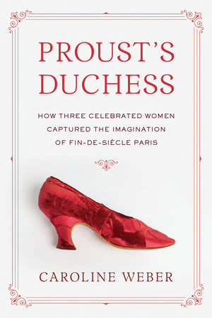

⊕ 
Buy from Amazon
Thanks to her astonishing, prize-worthy research, Caroline Weber knows more about the three real women Proust modelled the Duchesse de Guermantes on than the mythologizing Proust himself did. This is social history at its best.